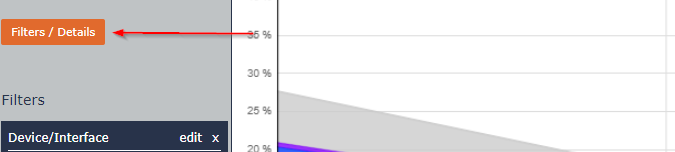
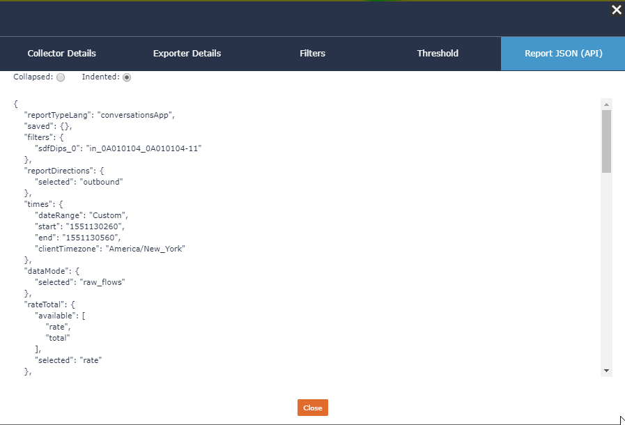

Report JSON (API)¶
Any report within Scrutinizer provides an option where you can view the JSON data that is passed from the front end to the back end in order to render the reports.
When in a report, simply click “Filters/Details” this will open up a modul where you can select the Report JSON (API) tab.
Experimenting with this tab will be very helpful when Adding Filters or Specifying a Report that are not available by default.
